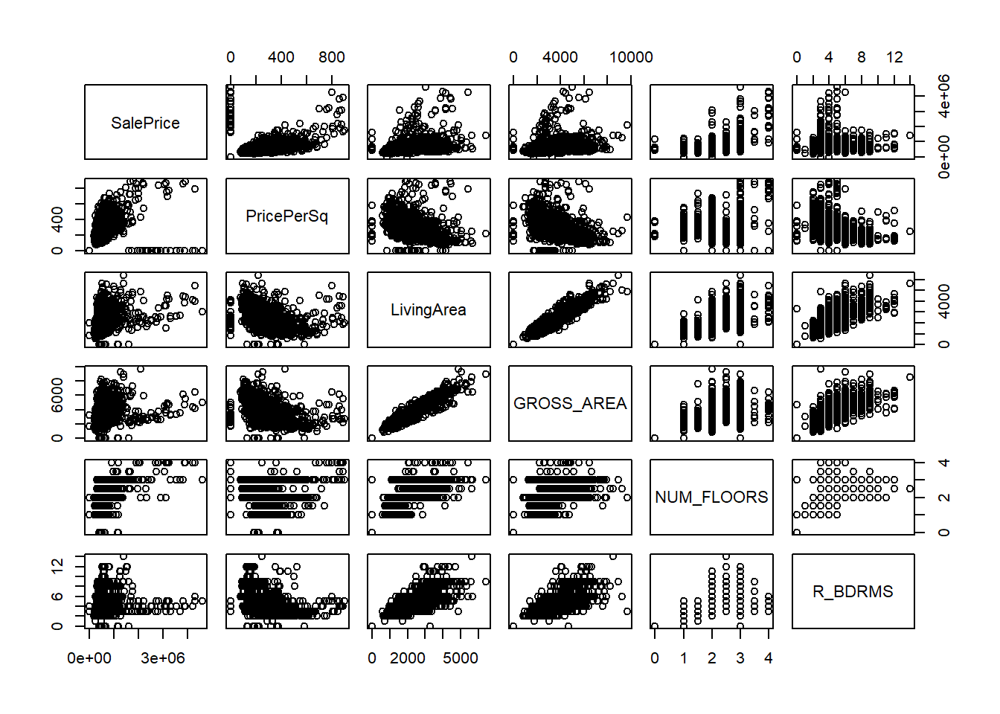
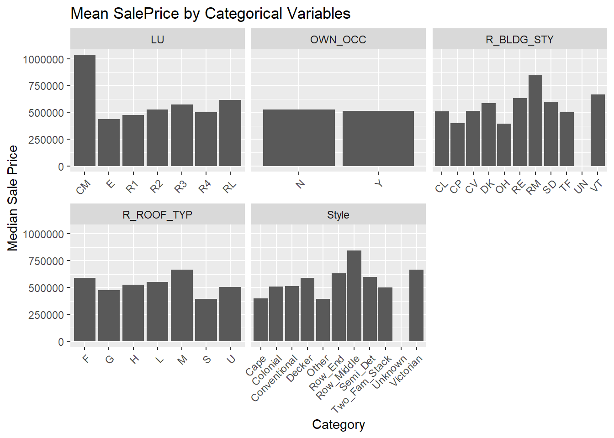

library(tidyverse)
library(sf)
library(caret)ML Model Selection with 
11.118/11.218 Applied Data Science for Cities
Introduction
From this week on, we’ll start dipping our toes into machine learning. The goal is to explore it as a way to make predictions: using what a computer has learned from existing data to make guesses about new data.
Today, as a big-picture look at the machine learning process, we’ll build and compare a few different models to see how each one makes different predictions based on the different rules it has learned.
Our exercise today is built on the example in Chapter 3 from Ken Steif’s book Policy Policy Analytics, which uses the Boston housing dataset to predict housing prices. The book is a great resource for connecting machine learning with urban studies. If you have time, it’s well worth reading other chapters.
Data Processing
Read in the data
We’ll be working with the CSV dataset containing sale prices and housing characteristics for homes sold in Boston between August 2015 and August 2016.
Here is the data download link.
The data used in this tutorial is a subset of the original larger dataset of Boston property assessment. You can explore the full data dictionary here.
boston <- read_csv("data/boston_house_price.csv")A few notes:
- The
SalePricevariable is the target we want to predict. - Other columns describe building characteristics such as square footage, number of floors, and number of bedrooms.
- Some variables are numeric (
dbl), while others are categorical (chrorfct).
Get to know the variables
Before feeding any data into a model, we need to understand and clean it. Every dataset is different, but there are some key steps you can consider:
Understand data structure:
glimpse(),str()are useful to get to know the details of variables we are dealing with. Numeric and categorical variables require different interpretations in a model later on so this is something to keep in mind. We will also see in our case,parcel_nois just an identifier and is not useful for predicting price.Handle missing values.
colSums(is.na(...)),plot_missing()can help identify which variables have missing values and how many. Missing value will not help in learning patterns, and analysts can deal with them in different ways (drop, fill, or flag) depending on variable contexts.Look at distributions. This is an important step (especially before fitting a regression model) because it helps guide feature selection and transformation. We will take a closer look at how these distributions show up in different types of variables:
Continuous variables
boston |>
select(SalePrice, PricePerSq, LivingArea,
GROSS_AREA, NUM_FLOORS, R_BDRMS) |>
pairs()
pairs() is a base R function, it creates a pairwise scatter plot matrix, which lets you visually examine the relationships between multiple numeric variables at once. In the graph, we usually look for the following:
How each predictor relates to the outcome (
SalePriceas Y-axis): On the top row, if you see an upward trend (a roughly linear increase withSalePrice), that predictor is likely to be a strong predictor of price.Relationships between predictors: Look for predictors that are highly correlated with each other (a sign of multicollinearity). For instance,
LivingAreaandGrossAreamay appear nearly linear in their scatterplot. If you calculate the Pearson correlation, it’s about 0.94. This means they contain overlapping information.- Depending on the modeling method, multicollinearity may or may not be a serious concern. It causes issues for linear models, but not for many others such as tree-based models. But it’s always worth checking.
Pattens, outliers and clusters. These visual cues in pairwise plots help you decide whether a linear model is appropriate, and whether certain data points might influence your results. For example:
The variable
PricePerSqmay look odd with a bunch of y values lining up at x=0.PricePerSqhere is a derived variable, calculated asSalePrice / LivingArea. Since it’s directly related to the outcome, it should not be used as a predictor ofSalePrice.You’ll also notice outliers especially for luxury homes that have extremely high sale prices. This should match what you would see in the histogram of
SalePrice. A log transform of such variables would improve model fit for linear models.
Categorical variables
You can make scatterplots with categorical variables (i.e., by including them in a pairs() plot), but the results often look less informative, because points will just line up vertically at two or three x-values.
A better approach for visually checking categorical variables is to compare the average outcome across categories. For example, what is the median Saleprice for each category of Style:
boston |>
select(SalePrice, OWN_OCC, Style, R_BLDG_STY, R_ROOF_TYP, LU) |>
pivot_longer(-SalePrice, names_to = "Variable", values_to = "Value") |>
group_by(Variable, Value) |>
summarise(median_price = median(SalePrice, na.rm = TRUE)) |>
ggplot() +
geom_col(aes(x = Value, y = median_price),position = "dodge") +
facet_wrap(~ Variable, scales = "free_x") +
theme(axis.text.x = element_text(angle = 45, hjust = 1)) +
labs(y = "Median Sale Price", x = "Category", title = "Mean SalePrice by Categorical Variables")
When examining categorical variables, we’re not looking for a linear trend, because the categories don’t have a natural order or numeric spacing. Instead, we focus on two main things:
Differences between groups. We want to know if the groups differ meaningfully in the outcome variable. If all groups have similar average sale prices, it means the variable doesn’t explain much of the variation in price and is likely a weak predictor. In our case,
OWN_OCCseems to have little impact on sale price.Rare or problematic groups. Just like with missing values in numeric variables, rare groups can cause problems in modeling. For example, if we look at the
Stylevariable, we might see a category labeled “Unknown” and it only appears twice in the dataset. Such categories don’t offer enough data to reliably estimate their effect, may introduce noise, and usually need to be removed or combined.The meaning of the variables. For example,
R_BLDG_STYis the same thing asStyle(just the abbreviations), so it should be removed.
Essentials of a Linear Model
We have found a few flags. Let’s first remove a few variables that look irrelevant, then try to fit a Multiple Linear Regression model to see how things look.
modeldata <- boston |>
select(-c(Parcel_No, PricePerSq, GROSS_AREA, R_TOTAL_RM,
R_BLDG_STY, OWN_OCC, Latitude, Longitude)) |>
filter(Style != "Unknown")
lm_model <- lm(data = modeldata,
SalePrice ~ .) # This means using all (.) variables to predict SalePrice
summary(lm_model)
Call:
lm(formula = SalePrice ~ ., data = modeldata)
Residuals:
Min 1Q Median 3Q Max
-1342169 -138321 -10138 111453 2159243
Coefficients:
Estimate Std. Error t value Pr(>|t|)
(Intercept) -775973.61 581976.00 -1.333 0.182629
LivingArea 152.55 16.58 9.201 < 2e-16 ***
StyleColonial -133117.91 38059.29 -3.498 0.000484 ***
StyleConventional 6530.67 46164.44 0.141 0.887522
StyleDecker 118762.75 61376.47 1.935 0.053186 .
StyleOther 75638.93 40447.32 1.870 0.061677 .
StyleRow_End 227922.13 57592.00 3.958 7.94e-05 ***
StyleRow_Middle 437323.28 58293.60 7.502 1.09e-13 ***
StyleSemi_Det 47152.64 55234.37 0.854 0.393422
StyleTwo_Fam_Stack 104717.89 54368.57 1.926 0.054290 .
StyleVictorian -325292.50 86931.20 -3.742 0.000190 ***
NUM_FLOORS 267640.25 29318.11 9.129 < 2e-16 ***
R_BDRMS -30455.31 6947.73 -4.383 1.25e-05 ***
R_FULL_BTH 166502.78 16378.56 10.166 < 2e-16 ***
R_HALF_BTH 45764.23 16276.88 2.812 0.004996 **
R_KITCH -5633.29 60579.66 -0.093 0.925924
R_FPLACE 158822.56 12169.22 13.051 < 2e-16 ***
LUE 186551.63 370695.90 0.503 0.614867
LUR1 551233.13 436911.97 1.262 0.207275
LUR2 256802.56 428071.44 0.600 0.548663
LUR3 -34729.69 427508.60 -0.081 0.935264
LUR4 -882391.07 366737.22 -2.406 0.016250 *
LURL 520149.44 323389.54 1.608 0.107959
R_ROOF_TYPG 142059.19 31961.21 4.445 9.47e-06 ***
R_ROOF_TYPH 134394.67 37488.74 3.585 0.000348 ***
R_ROOF_TYPL 159753.84 56277.56 2.839 0.004593 **
R_ROOF_TYPM 215319.44 41253.43 5.219 2.06e-07 ***
R_ROOF_TYPS 286046.42 152228.93 1.879 0.060438 .
R_ROOF_TYPU 1021891.32 392031.07 2.607 0.009237 **
YR_BUILT -149.53 103.84 -1.440 0.150088
---
Signif. codes: 0 '***' 0.001 '**' 0.01 '*' 0.05 '.' 0.1 ' ' 1
Residual standard error: 296000 on 1450 degrees of freedom
Multiple R-squared: 0.5911, Adjusted R-squared: 0.5829
F-statistic: 72.28 on 29 and 1450 DF, p-value: < 2.2e-16Linear model interpretation
Coefficients: effect size
The Estimate tell us how each predictor is associated with SalePrice, assuming all other variables are held constant. The sign of the values (+ or -) tell you the direction of the relationship.
i.e. if
LivingAreago up by 1 square feet, the house price tends to increase by about $152.55, keeping all other factors the same.
The Standard Error is about how certain we are about the estimate, smaller values mean more confidence.
i.e. if you ran your regression many times, the estimate (e.g., $152.55) for
LivingAreawould vary, on average, by $16.58 above or below that value.
- Note to revisit: Then we might see a few issues:
R_BDRMis negatively associated with housing price, which doesn’t make intuitive sense. This relates back to the multicollinearity issue we’ve spotted. When two predictors relate to each other, the model struggles to disentangle their individual effects.
For categorical variables, estimate shows how much the outcome differs from one reference category.
i.e.
Styleincludes 11 types of housing style, R will pick one (“Cape”, in this case) as the baseline. If the coefficient for"Colonial"is -133,117, it means homes with the"Colonial"style are predicted to cost $133,117 less than"Cape"style homes, holding everything else constant (i.e. same location, sq.ft., etc.).
Statistic values: significance
t-statistics and p-value measure the extent to which a coefficient is “statistically significant”, in other words, whether the relationship we see between that predictor and the outcome is likely to be real, or could have happened just by random chance.
The higher the t-statistics (and the lower the p-value), the more significant the predictor.
- Note to revisit: For a variable like
Style, some categories are significant while others are not. Does this mean the variable as a whole is useful?
Model performance
Model performance means how well our regression model fits the data or how useful it is for making predictions. We have several key metrics to evaluate this:
The coefficient of determination (R²) tells us the proportion of variance in the outcome that is explained by the predictors, ranging from 0 (no explanatory power) to 1 (perfect fit). For multiple linear regression, look for the Adjusted R2. In our example, it’s ~0.583, meaning this model explain 58.3% of the total variance in the outcome.
The Root Mean Squared Error (RMSE) measures the average size of the model’s prediction errors, or how far predicted values are from the actual value. It’s not directly given in the model summary, but can be retrieved:
sqrt(mean(residuals(lm_model)^2))[1] 292937.6With that, we can see our linear model explains ~58.3% of the variation in sale prices. On average, data points have an average error of $292,937. The model is decent, but not great.
We’ve made several notes above about issues like collinearity, flipping coefficients, and how variables can influence one another in multiple regression. Explaining all of these properly would take us deeper into statistical studies. For those of you with a background in statistics, you can further explore tools such as:
- VIF (Variance Inflation Factor) to detect and remove variables with high collinearity, or
- ANOVA tests to decide whether including a variable improves model fit.
But we’ll part our ways here. These issues become less critical in many machine learning models, which are designed to handle complex, overlapping, and nonlinear relationships among variables more naturally.
Moving to Machine Learning
Traditional statistical methods focus more on explaining the relationships between variables, such as whether and two what extent one factor affects another. Machine learning, on the other hand, focuses more on prediction: using what the model has learned (any kind of relationship) to make the best guess for new, unseen data.
The two metrics we looked at earlier (R² and RMSE) showed how well the model fit all the data we gave it. They were based on residuals. But they have not yet told us how the model will perform on new data that it hasn’t used before.
To test model performance on unseen data, we need to:
Evaluate model performance on a new dataset. In machine learning, we usually split the data into a training set and a test set for this purpose. We train the model on one portion of the data, and test it on the rest to see how well it generalizes.
Calculate RMSE on the test data. Find the difference between predicted values and true values in the test set. The lower the test RMSE, the better the model’s predictive accuracy.
Machine learning workflow
I will go through a full modeling workflow using the caret package. We’ll probably repeat this workflow several times in upcoming sessions. The code won’t change much because caret lets you build many models (lm, glmnet, rf, svm, xgbTree, etc.) using a consistent syntax.
Step 1: Data Preprocessing
Based on the EDA of your specific dataset, common tasks can include:
- Feature selection: removing redundant or irrelevant variables to simplify the model and reduce noise.
- Handling missing values: by dropping incomplete records or imputing them with estimated values.
- Handling extreme values: by removing outliers, or transforming the variables.
- Standardizing data: helpful for some algorithms (though not always required if you want coefficients to stay interpretable).
In our case, we’ll use the same prepared dataset we used for the multiple linear regression model.
modeldata <- boston |>
select(-c(Parcel_No, PricePerSq, GROSS_AREA, R_TOTAL_RM,
R_BLDG_STY, OWN_OCC, Latitude, Longitude)) |>
filter(Style != "Unknown") Step 2: Split data into training and testing sets
This involves first applying createDataPartition to generate row indices for the training set, then using those row indices to isolate the two subsets.
# Set a random seed to make results reproducible. Without this, R would randomly split the data differently each time you run it.
# This can be any number, but has to stay the same for all models
set.seed(24)
# Generate row indices for the training set
train_index <- createDataPartition(
y = modeldata$SalePrice, # Stratify by SalePrice to keep a similar price distribution in both training and test sets — prevents uneven splits.
p = 0.7, # we want 70% of the data in the training set.
list = FALSE # makes sure the output is a vector, not a list, so it's easier to use for indexing.
)
# Isolate the two subsets
train_data <- modeldata[ train_index,]
test_data <- modeldata[-train_index,]Step 3: Build the model
This is the place where you can swap out the model by simply changing the argument for method= , such as linear regression ("lm"), random forest ("rf"), elastic net ("glmnet"), XGBoost ("xgbTree"), etc.
lm_model <- train(
SalePrice ~ .,
data = train_data,
method = "lm"
)Step 4: Evaluate Model Accuracy Using RMSE
Now we evaluate how well our model performs on unseen data, that’s what the test set is for.
# use predict() to generate predicted sale prices for the test set.
pred <- predict(lm_model, newdata = test_data)
# compare those predictions to the actual sale prices using RMSE
lm_result <- RMSE(pred, test_data$SalePrice)
lm_result[1] 300800.5RMSE is calculated by compare the predicted and actual values in the test data, square them, find the mean, then take the square root. If doing it by hand, it will be like this:
sqrt(mean((test_data$SalePrice - pred)^2))[1] 300800.5Note: Still remember the train RMSE we worked out before? It was $292.937. It’s normal and expected that test errors are higher than train errors because the test data is new, the model should be making more mistakes on it.
A regularized linear model
It might seem like a good idea to include as many variables as possible in our linear model, but that’s not always the best approach. When we include too many predictors, the model can start to overfit, meaning it fits the training data too closely and ends up capturing random noise rather than meaningful patterns.
Regularization, in its broad sense, is a way to keep models simpler and more generalizable. For linear models, regularization helps the model to “selectively use” only the strong predictors.
There are two common types of linear model regularization: Ridge regression shrinks the coefficients of less important variables. LASSO regression shrinks some coefficients all the way to zero, effectively dropping those variables from the model. But all you need to do is to change input to the argument method = "glmnet".
We’ll continue using the same training and test sets as before, so the code below starts directly from the model-building step.
However, you’ll notice a few key differences compared to the linear regression model:
trControl = trainControl(method = "cv", number = 5) tuneLength = 3These two lines tell caret to perform 5-fold cross-validation and try 3 different tuning values for the regularization parameter. What does that mean, we’ll talk more about parameter tuning next time.
preProcess = c("center", "scale")This step standardizes the data because LASSO and Ridge are sensitive to the scale of predictors.
# Set a random seed
set.seed(24)
# Fit a new model
glmnet_model <- train(
SalePrice ~ .,
data = train_data,
method = "glmnet",
trControl = trainControl(method = "cv", number = 5),
tuneLength = 3,
preProcess = c("center", "scale")
)
# Predict
pred <- predict(glmnet_model, newdata = test_data)
# Calculate test RMSE
glmnet_result <- RMSE(pred, test_data$SalePrice)
glmnet_result[1] 301857.7Tree-based models
So far we have been working with linear models, but oftentimes data just doesn’t fit a straight line (or a flat plane, if we’re in a space with many variables). Real-world relationships can be nonlinear, irregular that a linear model can’t easily capture.
We will introduce Random Forest model next time, but it is one of the machine learning models that do not assume a relationship between predictors and the outcome (non-linear model), and do not rely on a fixed number of parameters (non-parametric model). The model learns the structure from the data itself.
Here is how we change the workflow to building a random forest model. Aside from the parameter tuning part that we will address more, the change you need to make is method = "rf".
# Set a random seed
set.seed(24)
# Fit a new model
rf_model <- train(
SalePrice ~ .,
data = train_data,
method = "rf",
trControl = trainControl("cv", number = 5),
tuneLength = 5
)
# Predict
pred <- predict(rf_model, newdata = test_data)
# Calculate test RMSE
rf_result <- RMSE(pred, test_data$SalePrice)
rf_result[1] 276192.4Model Summary
Here’s a summary of our model results. We tried a multiple linear model, a regularized linear model, and a Random Forest model. Their RMSE values differ, with the more flexible, nonlinear Random Forest achieving the lowest RMSE (so far).
Note: One reason the non-linear model performs better here is that
SalePriceis skewed and contain outliers, which makes it hard for straight line relationship to fit well. But this is less of an issue for non-linear, non-parametric models.Note: In this example our multiple linear and regularized linear models perform almost the same, which means, a typical linear model generalizes fine (not overfitting much). Regularization didn’t help much, but it didn’t really hurt either.
In machine learning, we usually test multiple models to find the one with the best prediction accuracy, which is at the core of this field.
| Model Type | RMSE |
|---|---|
| Multiple linear regression | 300,800.5 |
| Regularized linear regression | 301,857.7 |
| Random Forest | 276,192.4 |
As you’ve likely noticed, when we used different models, details like trainControl, preprocess changed. The caret package supports over 230 machine learning algorithms. Each model comes with its own set of hyperparameters that need to be tuned. We’ll explore those in more detail in next s
Lab Report
The Ames Housing dataset was compiled by Dean De Cock for use in data science education. It’s also a popular dataset in the Kaggle community. You can find many prediction projects based on it, where people demostrate different modeling approaches and techniques.
For practice, we’ll use the caret package to build models for predicting housing prices using the Ames Housing dataset. Don’t worry about building a perfect model. The goal is only to walk through the process and get familiar with how it works.
Explore the data:
- Take a closer look at the dataset and choose a subset of variables you’d like to work with (or use all of them, if you prefer).
- Perform exploratory data analysis (EDA) to understand patterns, identify missing values, and decide if you want to remove or treat any variables before putting into models.
- Briefly note your reasoning for major data cleaning or transformation steps.
Modeling:
- Fit three different models of your choice.
- Compute and compare their test RMSE values to evaluate prediction performance.
Summarize your results:
- Create a summary table comparing the RMSE results from the three models.
Please include your code as well as anything you want to note in your report, such as how you prepared the data, selected variables and models, and any data issues or challenges you encountered.
Please include all your work in a Quarto document and submit your Rendered HTML file to Canvas by 9am, Wednesday, Nov 12.